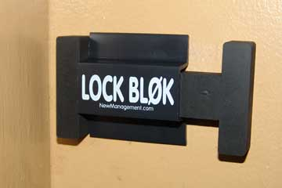
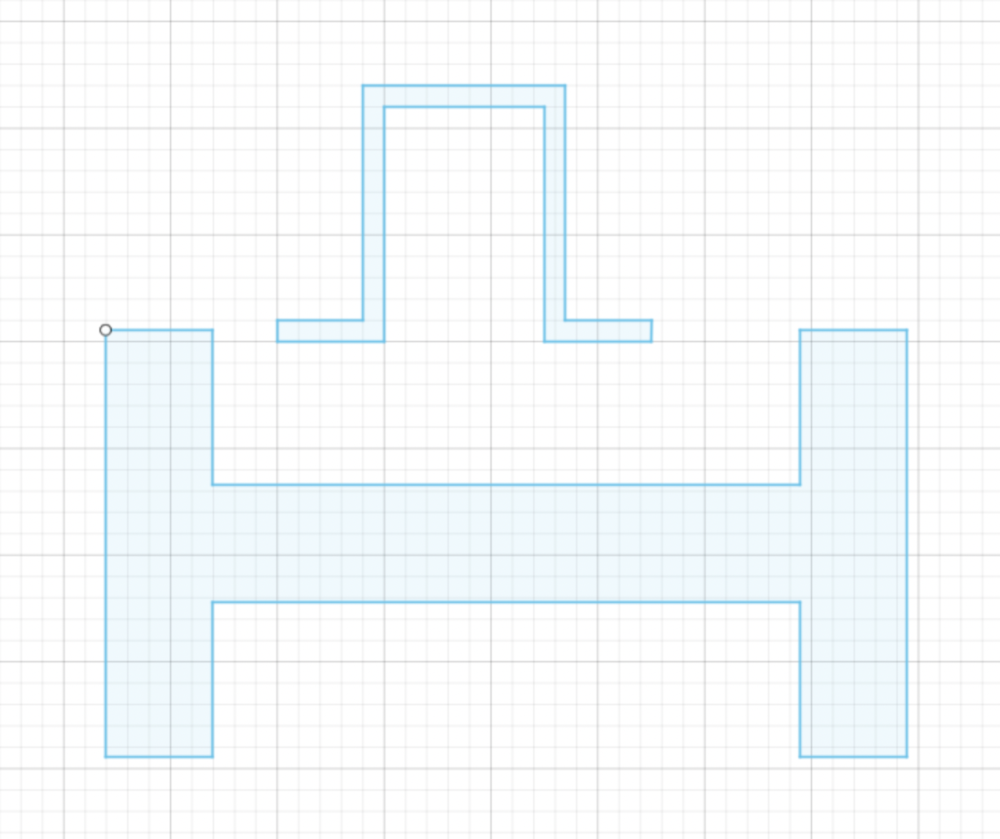
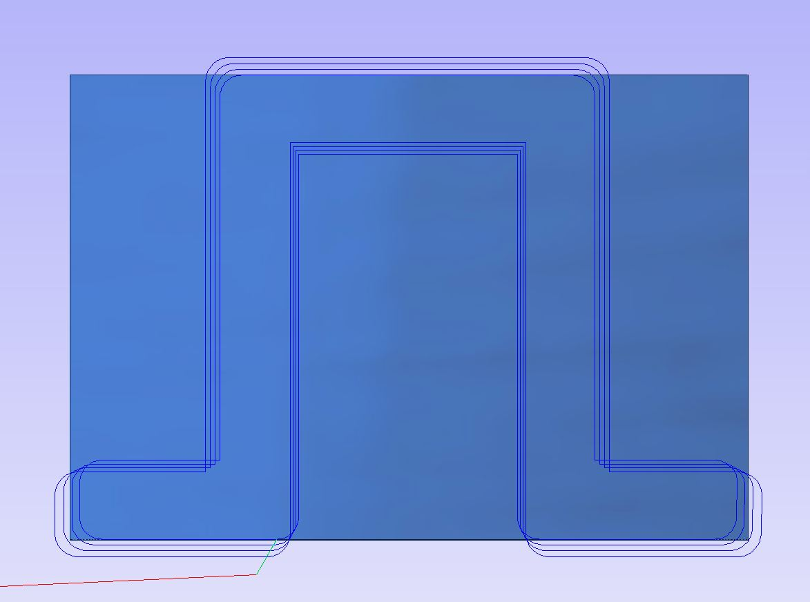
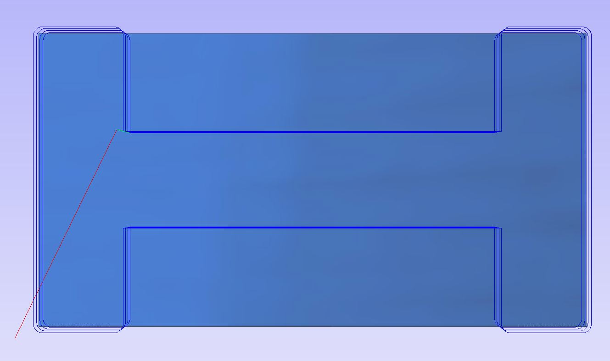

# cnc
# ---------------------------------
i suppose i've created this niche for myself as "the guy who does stuff with doors and locks," i figured for this week i would try to recreate a device i remember using in middle/high school: the lock blok
essentially, it works as a block to prevent the door from closing (and, consequently, locking). you can slide it over when the door is open to engage it, and slide it the other way to disengage it. simple, effective, and would be a great tool for my dorm room (which, much like a high school classroom), also automatically locks.
for my design, i replicated the two elements of the lock blok:
then I exported them as .dxf files, and prepared the files in aspire:
 i then milled the pieces using the shopbot:

unfortunately, upon returning to my room, i discovered that the molding/trim on my door wasn't flush with the wall, and as a result, the block isn't able to move perpendicular to the direction of the door closing:

additionally, the fact that it was made of wood felt a little precarious — as though the wood was in danger of snapping at any moment. i might, instead, make a version out of silicon or another rubbery/shock absorbent material.